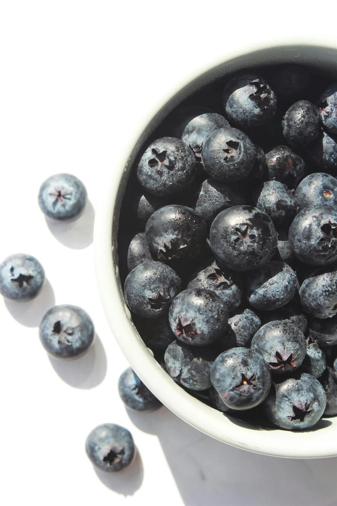
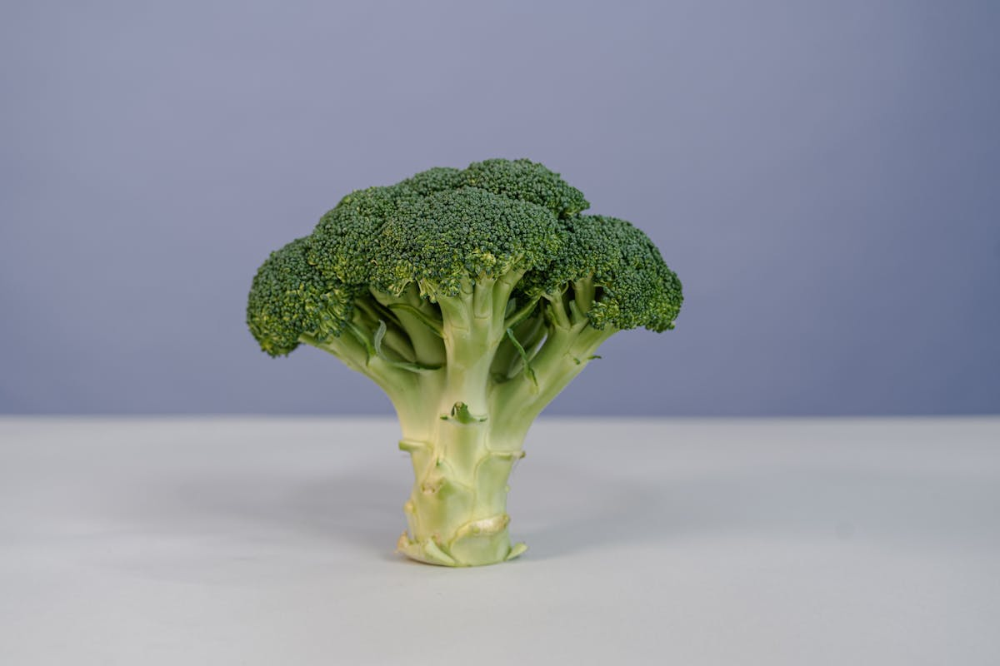
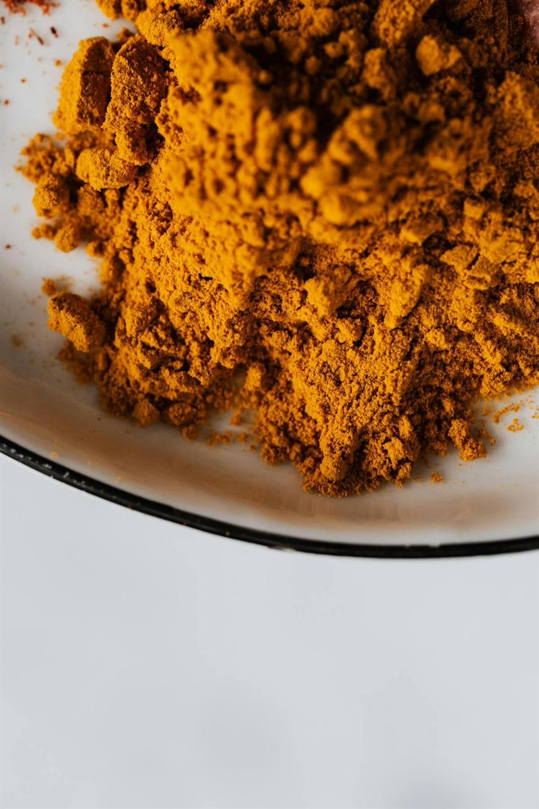
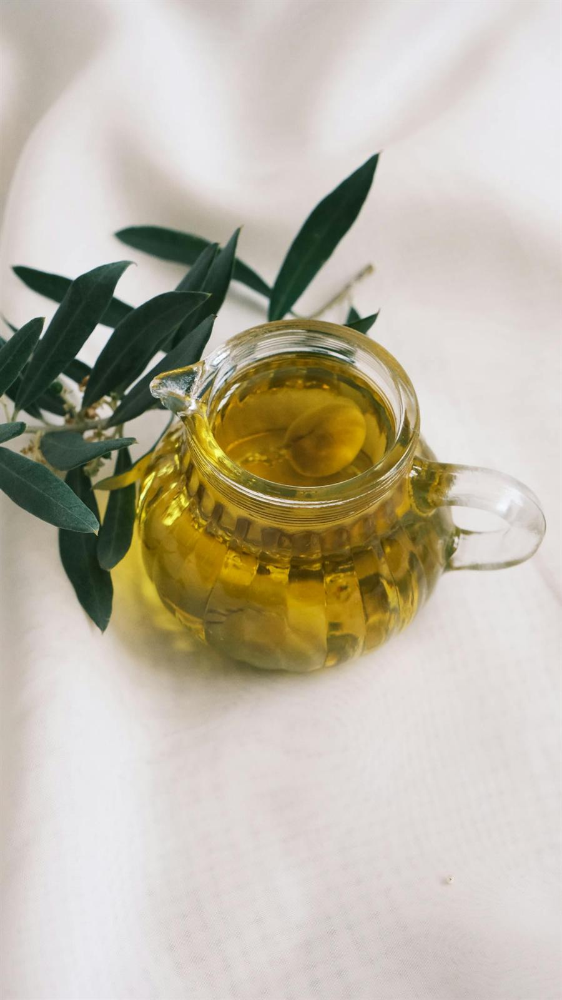
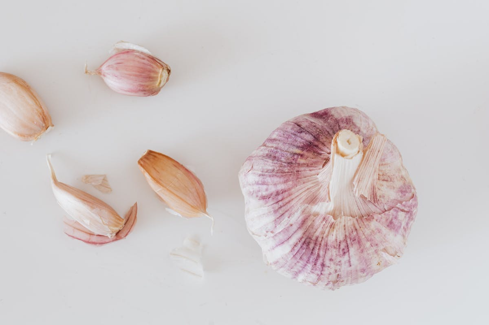
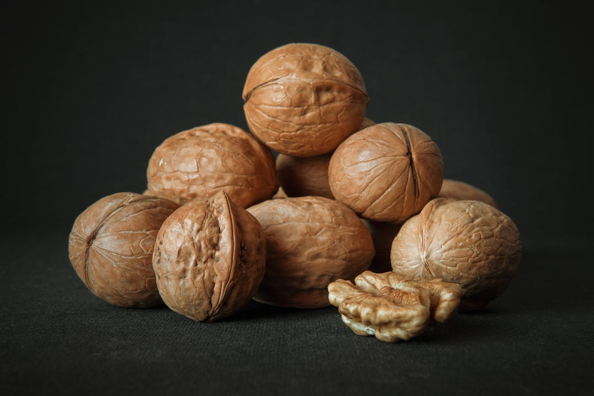
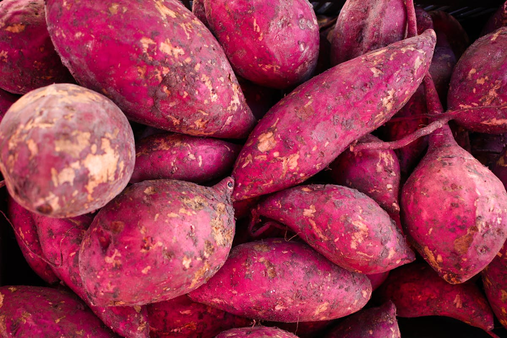
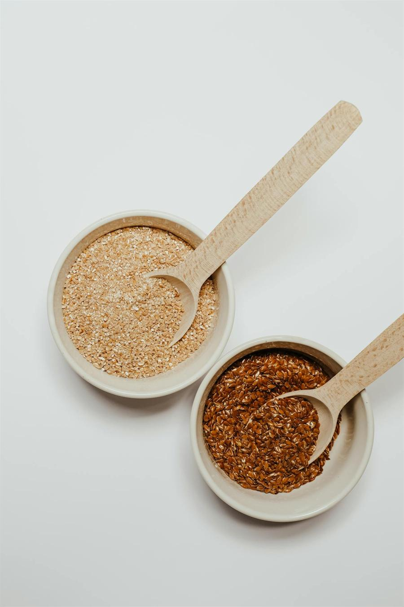
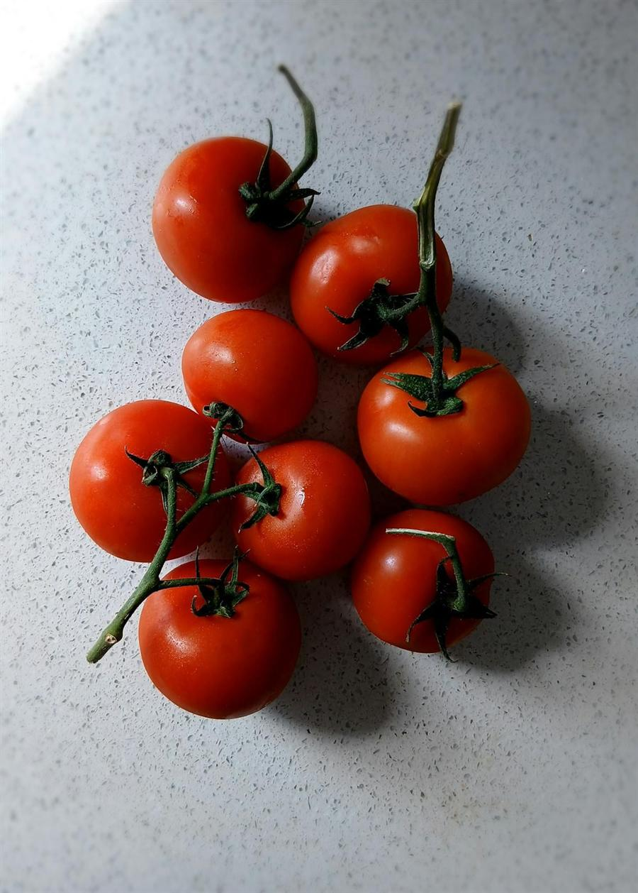
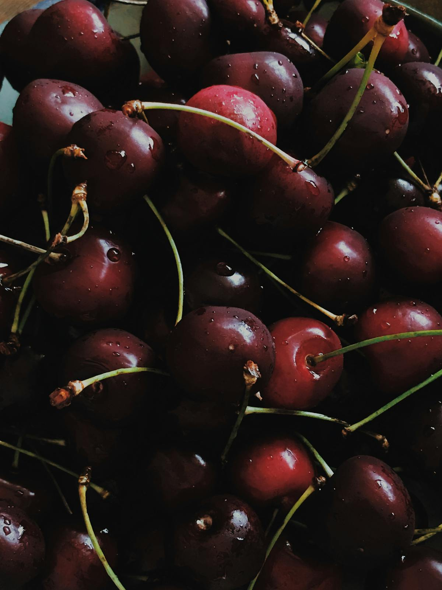

按分类浏览
全部食物

蓝莓
适合早餐和零食的高抗氧化浆果。
水果
三文鱼
富含 Omega-3，适合做抗炎正餐。
鱼类
西兰花
适合做简单家常菜的十字花科蔬菜。
蔬菜
姜黄
带有姜黄素的金黄色香料，适合做菜和热饮。
香料
橄榄油
适合炒菜和拌沙拉的健康脂肪基础食材。
健康脂肪
菠菜
适合日常做菜和奶昔的营养型绿叶菜。
蔬菜
绿茶
适合慢慢养成日常习惯的多酚饮品。
饮品
大蒜
家常菜里很容易用起来的基础调味食材。
香料
核桃
适合当零食，也适合撒进早餐里的 Omega-3 坚果。
坚果
奇亚籽
适合早餐和布丁的高纤维种子。
种子
燕麦
适合做早餐、也很容易搭配的全谷主食。
全谷物
生姜
适合热饮、料理和奶昔的温和香料。
香料
牛油果
适合正餐和加餐的柔滑健康脂肪来源。
水果
草莓
适合零食和早餐碗的酸甜浆果。
水果
扁豆
适合汤、炖菜和饭碗的高蛋白豆类。
豆类
红薯
适合日常正餐的高 β-胡萝卜素根茎类蔬菜。
蔬菜
石榴
适合撒在早餐碗和沙拉里的抗氧化水果。
水果
羽衣甘蓝
适合沙拉和奶昔的高营养绿叶蔬菜。
蔬菜
巴旦木
适合零食和做菜的百搭坚果。
坚果
抹茶
适合做日常饮品的浓缩绿茶粉。
饮品
亚麻籽
适合奶昔和烘焙的 Omega-3 种子。
种子
肉桂
适合燕麦、热饮和烘焙的温暖香料。
香料
番茄
适合生吃和熟食的茄红素来源。
蔬菜
藜麦
适合沙拉和饭碗的高蛋白谷物。
全谷物
鹰嘴豆
适合鹰嘴豆泥、正餐和零食的百搭豆类。
豆类
沙丁鱼
价格友好、又富含 Omega-3 的小型鱼类。
鱼类
罗勒
适合家常咸味料理的新鲜香草。
香草
迷迭香
适合烤箱料理和家常烹饪的香草。
香草
牛油果油
适合高温烹饪、也容易上手的健康脂肪油脂。
健康脂肪
樱桃
适合零食和恢复期食用的花青素水果。
水果